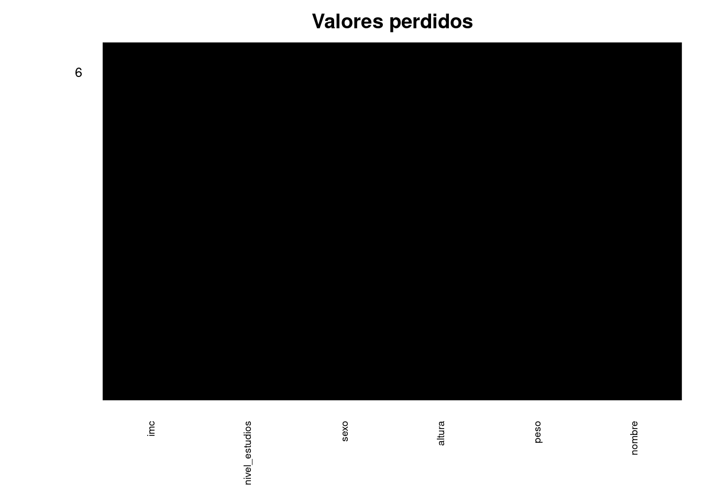

2668_Estadistica
Chapter 1 Introducción
rm(list=ls()) # El comando "rm(list=ls())" sirve para eliminar todos los análisis y variables previas. Este comendo se recomienda para utilizarlo al inicio de los análisis.
library(tidyverse)
library(here)1.1 Ejercicio 1
REALIZAR
Proporciona el tipo de variables que sería cada una de las que se describen a continuación.
- Edad:
- Género:
- Índice de masa corporal (IMC)
- Estado civil:
- Nivel educativo:
- Presión arterial:
- Número de hijos:
- Enfermedad diagnosticada (por ejemplo, diabetes, hipertensión):
- Nivel de ingresos:
- Consumo de tabaco (sí/no):
- Nivel de actividad física:
- Número de visitas al médico en un año:
- Acceso a servicios de salud (por ejemplo, seguro médico):
- Grupo étnico:
- Tasa de mortalidad:
- Uso de métodos anticonceptivos:
- Tasa de natalidad:
- Número de vacunas administradas:
- Tiempo de espera para recibir atención médica:
- Consumo de frutas y verduras diario (porciones):
(González et al., 2020)
1.2 Ejercicio 2
REALIZAR
Leer el artículo Programming tools: Adventures with R y contestar a las siguientes preguntas (Tippmann, 2015).
- ¿Cuáles son los beneficios de usar R para el análisis de datos?
- ¿Cómo pueden los científicos aprender a usar R de manera efectiva?
- ¿Qué tipo de soporte está disponible para los usuarios de R?
- ¿Se puede utilizar R para investigaciones más allá de la genética?
- ¿Cuáles son algunos ejemplos de cómo se utiliza R en investigaciones científicas?
- ¿Existen desventajas al usar R para el análisis de datos?
- ¿Cómo afecta el aprendizaje de R al enfoque de un científico en el análisis de datos?
- ¿Cómo se compara R con otros lenguajes de programación?
1.3 Ejercicio 3
REALIZAR
Leer el artículo Inorganic arsenic exposure and neuropsychological development of children of 4-5 years of age living in Spain y contestar a las siguientes preguntas.
- ¿Cuál es el objetivo del estudio?
- Define la población de estudio.
- Describe la muestra de población utilizada en el estudio.
- Enumere las variables principales utilizadas y describa su tipología
1.4 Ejercicio 4
EJEMPLO
Cálculos básicos con R.
Con R se pueden hacer cálculos básicos matermáticos.
Construcción de variables
En este caso para construir la base de datos generamos vectores. Todos los vectores deben de tener el mismo tamaño.
## [1] "Pablo" "Maria" "Patricia" "Lucas" "Emilio" "Julia"## [1] 60.5 72.6 57.7 90.8 95.8 72.9## [1] 1.60 1.64 1.50 1.70 1.80 1.65## [1] 1 0 0 1 1 0nivel_estudios <- c("Educación primaria", "Educación primaria", "Educación secundaria", "Educación superior", "Educación superior", "Educación primaria")Base de datos
Con la función data.frame combinamos todas las variables generadas en una base de datos.
## nombre peso altura sexo nivel_estudios
## 1 Pablo 60.5 1.60 1 Educación primaria
## 2 Maria 72.6 1.64 0 Educación primaria
## 3 Patricia 57.7 1.50 0 Educación secundaria
## 4 Lucas 90.8 1.70 1 Educación superior
## 5 Emilio 95.8 1.80 1 Educación superior
## 6 Julia 72.9 1.65 0 Educación primariaEtiquetas
Las etiquetas van asociadas a cada variable y aportan información adicional. Si finalidad va en línea con el “codebook”
library(Hmisc)
label(datos[["nombre"]]) <- "nombre sin apellidos"
label(datos[["peso"]]) <- "kg"
label(datos[["altura"]]) <- "m"
label(datos[["sexo"]]) <- "mujer = 0 y hombre = 1"
label(datos[["nivel_estudios"]]) <- "Nivel estudios sistema nacional"Variable derivada
Aquí generamos una variable nueva derivada dentro de la base de datos “datos” llamada “imc”. Luego asignamos una etiqueta
La función “str” es muy útil, pues permite de una forma muy rápida analizar la base de datos.
## 'data.frame': 6 obs. of 6 variables:
## $ nombre : 'labelled' chr "Pablo" "Maria" "Patricia" "Lucas" ...
## ..- attr(*, "label")= chr "nombre sin apellidos"
## $ peso : 'labelled' num 60.5 72.6 57.7 90.8 95.8 72.9
## ..- attr(*, "label")= chr "kg"
## $ altura : 'labelled' num 1.6 1.64 1.5 1.7 1.8 1.65
## ..- attr(*, "label")= chr "m"
## $ sexo : 'labelled' num 1 0 0 1 1 0
## ..- attr(*, "label")= chr "mujer = 0 y hombre = 1"
## $ nivel_estudios: 'labelled' chr "Educación primaria" "Educación primaria" "Educación secundaria" "Educación superior" ...
## ..- attr(*, "label")= chr "Nivel estudios sistema nacional"
## $ imc : 'labelled' num 23.6 27 25.6 31.4 29.6 ...
## ..- attr(*, "label")= chr "índice de masa corporal"Valores perdidos
La función “is.na()” identifica los valores perdidos mediante TRUE o FALSE. Con la función “table()” se genera la tabla de contingencia idenficando de forma rápida el número de valores perdidos (TRUE). La presencia de valores perdidos puede tener varios orígenes y es necesario tratalos con cuidado
## nombre peso altura sexo nivel_estudios imc
## [1,] FALSE FALSE FALSE FALSE FALSE FALSE
## [2,] FALSE FALSE FALSE FALSE FALSE FALSE
## [3,] FALSE FALSE FALSE FALSE FALSE FALSE
## [4,] FALSE FALSE FALSE FALSE FALSE FALSE
## [5,] FALSE FALSE FALSE FALSE FALSE FALSE
## [6,] FALSE FALSE FALSE FALSE FALSE FALSE##
## FALSE
## 36La libreria “Amelia” es muy util para identificar si existen valores perdidos. Los valores perdidos se identifican en color amarillo y los que no son perdidos en color negro.
library(Amelia)
missmap(datos, main="Valores perdidos", col=c("yellow", "black"), legend=FALSE, x.cex = 0.6)
(Kabacoff, 2015)
1.5 Ejercicio 5
REALIZAR
- Genera una base de datos con 5 variables (3 cuantitativas y 2 cualitativas) de dimensión 10,5.
- Genera una variable derivada y asígnale un nombre.
- Genera una variable que contenga valores perdidos.